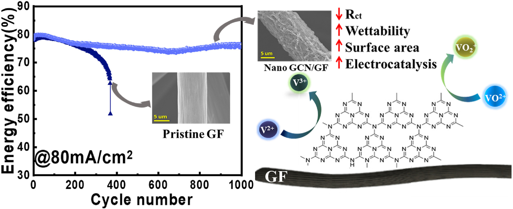

Scholarly article
Heterogeneous graphite felt electrodes decorated with nanostructured graphitic carbon nitride for enhanced redox kinetics in vanadium redox flow batteries
Journal of Power Sources, 667, 239216 (2026).
Research topic: Redox Flow Batteries
Abstract
Graphite felt (GF) is a porous carbonized polymer used as multifunctional electrodes in energy and environmental electrochemical devices. Despite its high surface area, limited surface-active sites reduce catalytic activity. Furthermore, its intrinsic hydrophobicity requires hydrophilic pretreatment for effective electrochemical performance. Graphitic Carbon Nitride (g-C3N4) enables structural regulation by creating conjugated systems through its electronic structure, thereby expanding its multifunctionality and applications in electrode materials. An optimal g-C3N4 concentration on the GF ensures better conductivity, resulting in higher electrochemical activity. This study used thermal polymerization to decorate GF with g-C3N4 (GCN/GF), and nano GCN/GF electrode showed excellent hydrophilicity, lowest charge-transfer resistance (Rct), and high electrochemical activity. An optimally decorated g-C3N4 showed minimal agglomeration, better distribution on GF surfaces, and superior active sites for VO2+/VO2+ redox reaction. Its uniform decoration of g-C3N4 facilitated charge transport, enhanced hydrophilicity, and improved electrolyte access, reducing electrochemical polarization during active species transfer, and energy efficiency improved to 84.13 % at 80 mA cm(-2). The long-term cycling performance confirmed the durability of the vanadium redox flow battery (VRFB) with the nano GCN/GF electrode, exhibiting negligible degradation for 1000 cycles. These findings highlight the potential of g-C3N4 as a cost-effective alternative to noble metals for high-performance VRFB electrodes.
Highlights
- Urea thermal polymerization enables tunable decoration of g-C3N4 nanostructures on GF.
- Layered g-C3N4 structures increase surface area and enhance electrode wettability.
- Synergistic structure and chemistry improve durability and energy efficiency.
- g-C3N4/GF electrodes exhibit high stability and long-term VRFB reliability.
Graphical Abstract
